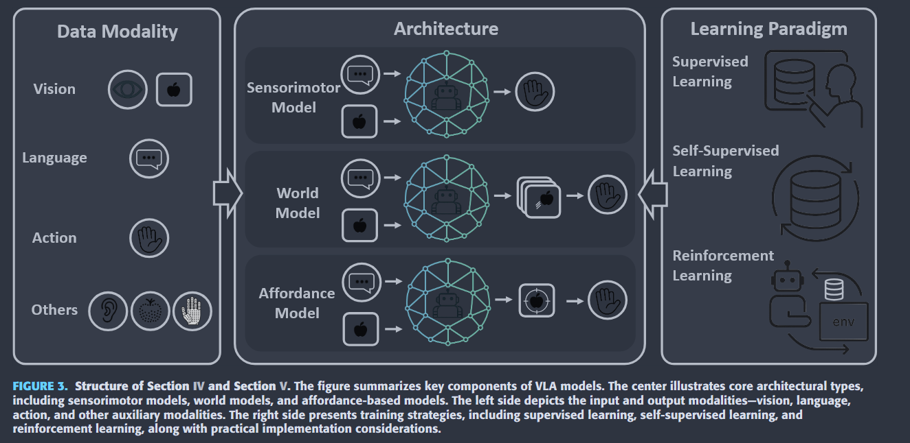
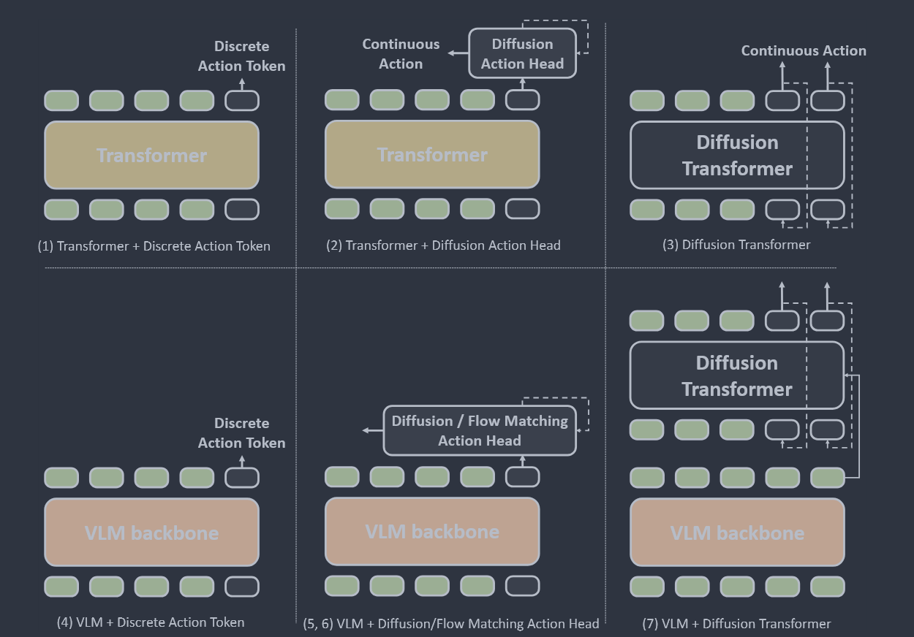
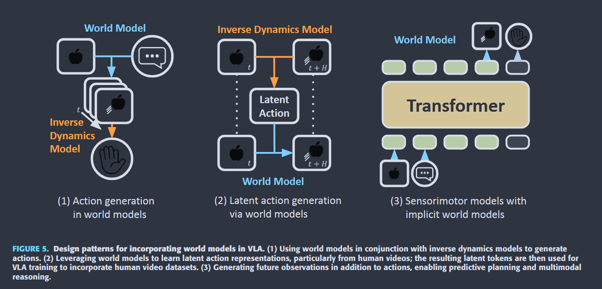
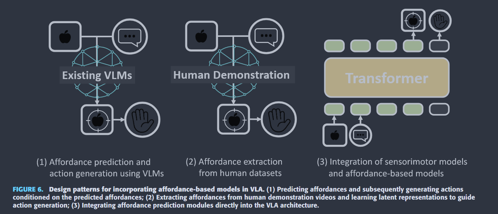
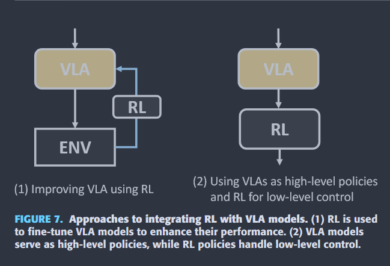
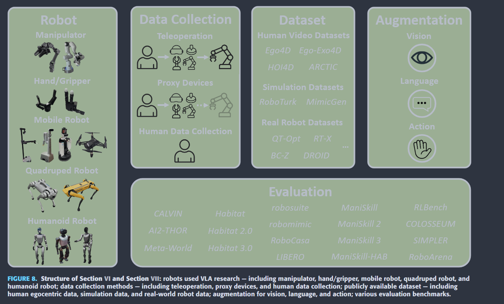
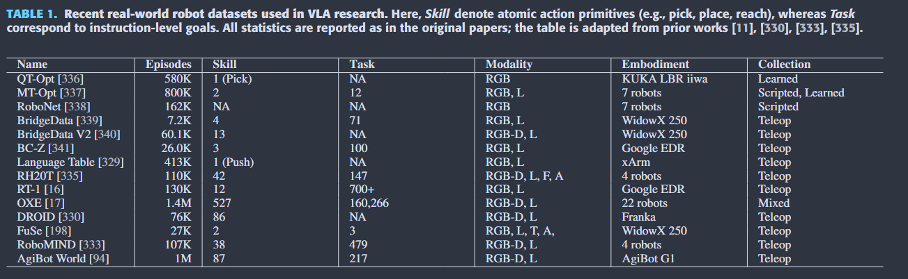

Source: Zotero note; match: identical attachment.Open item in Zotero
Amid growing efforts to leverage advances in large language models (LLMs) and visionlanguage models (VLMs) for robotics, Vision-Language-Action (VLA) models have recently gained significant attention. By unifying vision, language, and action data at scale, which have traditionally been studied separately, VLA models aim to learn policies that generalise across diverse tasks, objects, embodiments, and environments. This generalisation capability is expected to enable robots to solve novel downstream tasks with minimal or no additional task-specific data, facilitating more flexible and scalable real-world deployment. Unlike previous surveys that focus narrowly on action representations or high-level model architectures, this work offers a comprehensive, full-stack review, integrating both software and hardware components of VLA systems. In particular, this paper provides a systematic review of VLAs, covering their strategy and architectural transition, architectures and building blocks, modality-specific processing techniques, and learning paradigms. In addition, to support the deployment of VLAs in real-world robotic applications, we also review commonly used robot platforms, data collection strategies, publicly available datasets, data augmentation methods, and evaluation benchmarks. Throughout this comprehensive survey, this paper aims to offer practical guidance for the robotics community in applying VLAs to real-world robotic systems. All references categorized by training approach, evaluation method, modality, and dataset are available in the table on our project website: https://vla-survey.github.io.
Design Transition :
Early CNN-based End-to-End - CLIPort
Transformer-based Sequence Models - Gato, VIMA
Unified real world policies with pre-trained VLMs - RT-1/2, RT - X series -> OpenVLA
Diffusion Policy - Octo (Only at action head)
Diffusion Transformer Architecture - RDT-1B
Flow Matching Policy Architectures - pi0 - action
Latent Action - LAPA (unlabeled video data for pre-training) , VQ-VAE (Xt to Xt+H)
Hierarchical Policy Architectures - Pi 0.5, GR00T N1

Architectures and building blocks
1.Sensorimotor Model

(1) Transformer + Discrete Action Token - VIMA, Gato, RT-1
(2) Transformer + Diffusion Action Head - Octo, NoMAD, TinyVLA, RoboBERT, VidBot
(3) Diffusion Transformer - RDT-1B - Action tokens via cross attention with a vision and language query + MLP mapping
(4) VLM + Discrete Action Token - RT-2 (PaLM-E or PaLI-X), LEO, GR-1, RTH, RoboMamba, QUAR-VLA, OpenVLA, LLARA, ECOT, 3D-VLA
(5) VLM + Diffusion/Flow Matching Action Head - Diffusion VLA, DexVLA, ChatVLA, ObjectVLA, GO-1, PointVLA, MoLe-VLA, Fis-VLA, CronusVLA
(6) VLM + Flow Matching Action Head - pi0, OneTwoVLA, Hume, SwitchVLA
(7) VLM + Diffusion Transformer - GR00T N1
2.World Model

(1) Action generation - Future Observations - UniPi, DreamGen, GeVRM(Future visual representations) - IDM
LUMOS, CoT-VLA, MegaPose, Dreamitate
Optical Flow/Feature Point - AVDC, ATM, Track2Act, LangToMo, DiffMatcher, PPI
(2) Latent Action Generation - LAPA (Video -> latent action -> action head -> action)
(3) Sensorimotor models with implicit world models
jointly output action and future observations - GR-1, GR -2 GR-MG, WorldVLA, ViSA-Flow, FLARE, UVA
3. Affordance-Based Model

DATA MODALITIES
(1) Vision
most common: ResNet or ViT
VLM: CLIP, SigLip + DINOv2
Discretizing into token sequences: VQ-GAN, VQ-VAE
(2) Language Tokenization - Inherit from LLM - BPE, USE
(3) Action Representation:
a. Discretized action token obtained via binning
discretize each dimension of the action space into bins (typically 256), with each bin ID treated as a discrete token - RT-2, OpenVLA, FAST (DCT + BPE to reduce token length)
b. Decoding tokens into continuous actions
tokens generated by a transformer are mapped to continuous actions via a multilayer perceptron (MLP), typically trained with an L2 or L1 loss. - OpenVLA-OFT
c. Continuous action modeling via diffusion or flow matching - Octo, pi0
d. learning latent action representation from web-scale data - LAPA Moto UniVLA UniSkill
e. alternative action representation - SpatialVLA (allocate higher resolution to frequently occurring motions) ForceVLA, ChatVLA (MoE) switch action policies on task phases, iManip (Continual Learning)
f. Cross-embodiment action representation
OXE
CrossFormer - unified processing by first tokenizing heterogeneous sensor observation, unified token sequence + action head
UniAct - UAS
LangToMo, ATM -> Optical Flow
g. Miscellaneous Modalities
audio - Unified-IO 2, SOLAMI, FuSe, VLAS, MultiGen
tactile - FuSe TLA VTLA Tactile-VLA, ForceVLA
3D information - Depth images, Multi-view images, Voxel representations, Point clouds
Emerging Techniques:
Hierarchical Architectures - Atomic Skills, LMM-3DP
Chain of Thought Reasoning - ECoT, CoT-VLA
Training Strategies
Supervised Learning
Self-supervised Learning
Modality Alignment
Visual Representation
Latent Action Representation Learning
Reinforcement Learning

(1)iRe-VLA, VLA-RL, MoRE
(2)NaVILE, SLIM, LUMOS, DexTOG
Training Stages
a. Pre-training
b. Post-training - Fine-tune Action Head or LoRA or Distillation
Inference - RTC


Tips: What aspects did you question, how do you think it can be improved?
Tips: What was done, what problem was solved, innovations and shortcomings?